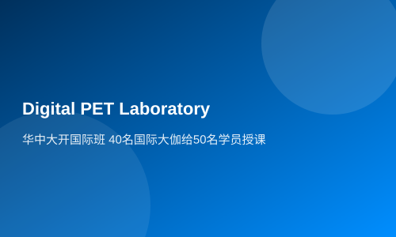

Huazhong University opened an international class of 40 international dajia to teach 50 students
(Science and Technology Daily May 16, 2019, Page 8) Inside and Outside the Campus
Quantum computers, 'ghost particles', digital PET 2.0... From astrophysics and particle physics to brain science, from advanced microelectronics to intelligent devices, from artificial intelligence to big data and high-performance computing applications, the course content is rich and diverse. On May 13th, the fifth session of the Advanced Research and Industrial Intelligent Signal Processing Summer School (hereinafter referred to as INFIERI) was held at the Wuhan National Optoelectronics Research Center of Huazhong University of Science and Technology.
During the summer school, there are particle physicists such as Ian Shipsey, Director of Oxford University's Department of Physics, explaining mysterious dark matter in the universe; Philip Allport, a professor of high-energy physics at Birmingham University and member of the European Future Accelerator Detector Committee, discussing the impact of semiconductor advanced technology innovations on high-energy physics facilities; Alba Di Pardo, a researcher from the world-renowned brain science research center, the Mediterranean Neurological Institute in Italy, leading everyone into the 'last frontier' of natural sciences to explore the mysteries of the brain and reveal the truth about brain diseases.
This marks the first time that this scientific research activity dedicated to intelligent signal processing, focusing on cutting-edge research and major technological advancements across multiple disciplines such as astrophysics, high-energy physics, medicine, artificial intelligence, and big data has been held in Asia. Previously, the project was conducted at Oxford University, Paris University, Hamburg University, among others.
The theme of the fifth session of INFIERI is integration (Integration), which means interdisciplinary collaboration, field convergence, and industry-academia linkage. The summer school recruited a total of 50 doctoral students, master's students, and postdoctoral fellows from universities and research institutions in China, Italy, France, Germany, Spain, Brazil, Argentina, Japan, among other countries as participants. Over forty experts from Asia, Europe, and America gave lectures on high-energy physics, astrophysics, medical physics through a combination of keynote speeches and experiments.
Interdisciplinary collaboration is an inevitable trend in the development of science and education, serving as the source of innovative ideas. Through knowledge flow, pattern combinations, method collisions, theoretical mutual references, new ideas, theories, and methods can be generated, thereby advancing scientific and educational development.
Professor Aurore Savoy-Navarro from the Atomic Energy Commission's Astrophysics and Cosmology Laboratory at the French National Center for Scientific Research is one of the co-chairs of this event. She said that integration not only manifests in multi-disciplinary and cross-field research collaborations but also in extensive international exchanges among experts and students from different races, regions, and cultures, which is crucial for nurturing young generations and enhancing their scientific research levels and international perspectives.
Zhan Yiqing, a member of the Standing Committee of Huazhong University's Party Committee and Vice President, delivered an opening speech at the ceremony. He pointed out that Huazhong University boasts top engineering and medical programs, based on which the school has always been committed to integrating the ideas of medical-engineering integration and industry-academia-research collaboration into teaching, creating a multi-disciplinary learning environment for students. This summer school activity not only enables students to keep up with the latest developments in scientific fields but also provides overseas students with an opportunity to better understand our country and culture.
Professor Xie Qingguo from Huazhong University's Digital PET Laboratory is the organizer of this event. According to him, his digital PET team comprises members from over ten disciplines such as biomedical engineering, telecommunications, electronics, control systems, clinical medicine, among others, including faculty and students from China, Europe, America, and other countries; their research areas include high-energy physics, consumer electronics, digital signal processing, clinical medical applications, advanced materials, and system integration, all highlighting the characteristics of integration. This is a typical teaching case for this summer course.